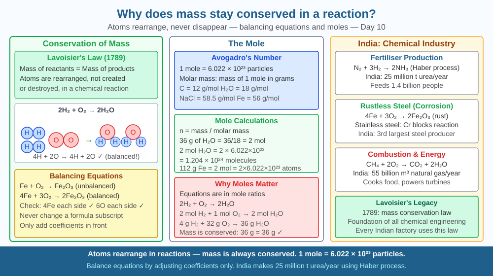

By the end of this lesson, you should be able to state and explain the law of conservation of mass, balance chemical equations, and predict where mass goes when combustion appears to lose it.
Burn a candle: wax disappears. Rust iron: it gets heavier. Dissolve salt: it vanishes into water. These seem to violate each other. Yet Lavoisier (1789) showed: weigh reactants carefully, weigh products carefully (including all gases), and total mass is always the same. Why?
Law of conservation of mass: In any chemical reaction, total mass of reactants = total mass of products. Atoms are neither created nor destroyed — they are rearranged.
Why it holds: Chemical reactions break and form chemical bonds but cannot change atomic nuclei. Same atoms before and after, just rearranged into different molecules.
Balancing equations: C + O₂ → CO₂ (already balanced, 1C and 2O each side) CH₄ + 2O₂ → CO₂ + 2H₂O (1C, 4H, 4O each side ✓)
Candle mystery explained: Wax (C₂₅H₅₂) + O₂ → CO₂ + H₂O. The CO₂ and water vapour escape into air — invisible gases. If you burned the candle in a sealed container and weighed everything, total mass would be unchanged.
Rust mystery: Fe + O₂ → Fe₂O₃. Iron absorbs oxygen from air — gains mass. Oxygen wasn't weighed before.
Mole concept: 1 mole = 6.022 × 10²³ particles (Avogadro's number). Molar mass = mass of 1 mole in grams (e.g., H₂O = 18 g/mol).
Think of a chemical reaction as a LEGO® set being rebuilt — no bricks are ever added or removed:
Lavoisier's breakthrough was insisting on weighing all gases — before and after. Once you count every brick that enters or leaves the box, the total never changes.
The SVG shows conservation of mass as a two-pan balance with three reaction examples, each demonstrating the law from a different angle.
The first balance shows a burning candle on the left pan and its products — CO₂ and H₂O molecules — collected in a sealed dome on the right pan. Both pans remain level, with mass values labelled (e.g., 1 g wax + 2.9 g O₂ = 3.9 g products). An arrow points to the escaping gases with the label "invisible, but still there." The second balance shows iron powder before and after rusting, with the right pan (Fe₂O₃) visibly heavier, and an arrow indicating "oxygen from air added to iron — the missing mass." The third panel shows the balanced equation CH₄ + 2O₂ → CO₂ + 2H₂O as a brick-count diagram: 1C, 4H, 4O on the left; 1C, 2O (CO₂) + 4H, 2O (H₂O) = 1C, 4H, 4O on the right — atoms counted explicitly showing the balance.

India's chemical manufacturing sector uses stoichiometry (mass calculations) to optimise yield. ONGC's refineries calculate exact quantities of catalysts and feedstock for every batch. Pharmaceutical synthesis: manufacturing 1 kg of aspirin (C₉H₈O₄) requires exact masses of acetic anhydride and salicylic acid, calculated from the balanced equation and molar masses. India's fertiliser plants (IFFCO) produce urea by reacting exactly calculated quantities of ammonia and CO₂ based on conservation of mass: 2NH₃ + CO₂ → CO(NH₂)₂ + H₂O.
India's steel industry (Tata Steel, JSW Steel — together producing ~120 million tonnes per year) relies on stoichiometric calculations to control the carbon content of steel. Too much carbon makes steel brittle; too little makes it soft. Blast furnace operators use the balanced equation for iron ore reduction (Fe₂O₃ + 3CO → 2Fe + 3CO₂) to calculate exactly how much coke to add per tonne of ore. Every bridge, rail track, and skyscraper built in India is a product of conservation of mass applied at industrial scale.
Weigh a full sealed bottle of fizzy water. Open it and let all CO₂ escape. Reweigh. The bottle is lighter by the mass of CO₂ that escaped. If you had caught the CO₂ and added it to the balance, total mass would equal original weight. This confirms conservation of mass — the CO₂ didn't disappear, it moved.
Extend: calculate the approximate mass of CO₂ lost. A 500 mL bottle of carbonated water typically contains about 3 g of dissolved CO₂. After opening and shaking for 2 minutes, how much CO₂ do you predict escaped? Weigh the bottle before and after — does your measurement match the expected 3 g? What systematic error might cause a discrepancy (hint: some water may have evaporated during the experiment)?
Einstein's famous E = mc² shows that in nuclear reactions, mass IS converted to energy — the total of mass + energy (as mass-equivalent) is conserved, not mass alone. When uranium-235 undergoes fission, the products weigh slightly less than the original nucleus — the "mass defect" is converted to enormous energy (binding energy). In chemical reactions (like burning), E = mc² also applies — the reactants have very slightly more mass than products, but the difference is negligibly small (about 10⁻¹² g per mole). At the chemistry scale, mass conservation is an excellent approximation.
Predict: A student burns magnesium ribbon in a sealed glass jar. She weighs the jar + magnesium before burning and the jar + white ash (MgO) after burning. She finds the mass after is slightly higher than before. Is this possible, or has conservation of mass been violated? Explain step by step what has actually happened, naming any gas that was consumed during the reaction and where it came from.
What does the law of conservation of mass state about a chemical reaction?
Correct answer: C
Why is understanding the atomic mechanism of mass conservation more useful than just stating the law?
Correct answer: B
If a metal burned completely in air and the ash seemed lighter, what prediction explains this correctly?
Correct answer: B
A pharmaceutical student is synthesising paracetamol (C₈H₉NO₂, molar mass = 151 g/mol) from para-aminophenol (C₆H₇NO, molar mass = 109 g/mol) and acetic anhydride (C₄H₆O₃, molar mass = 102 g/mol). The balanced reaction is:
C₆H₇NO + C₄H₆O₃ → C₈H₉NO₂ + CH₃COOH
She starts with 10.9 g of para-aminophenol and excess acetic anhydride. Using conservation of mass and molar ratios: 1. Calculate the theoretical yield of paracetamol in grams. 2. She recovers only 11.3 g of product. Calculate her percentage yield. 3. What does conservation of mass tell you must have happened to the "missing" mass?
Show all working. (Molar mass of CH₃COOH = 60 g/mol as a check.)
Lavoisier, who established the law of conservation of mass in 1789, was executed by guillotine in 1794 during the French Revolution — not for his science, but because he had worked as a tax collector. The mathematician Joseph-Louis Lagrange reportedly said: "It took them only an instant to cut off that head, and a hundred years may not produce another like it." The law of conservation of mass — which underpins every chemical equation, every industrial process, and every pharmaceutical calculation — was established by a scientist killed for his day job. Science survived its founder by centuries.
In every chemical reaction, atoms are only rearranged — never created or destroyed — so total mass of reactants always equals total mass of products, even when gases escape and make it look otherwise.